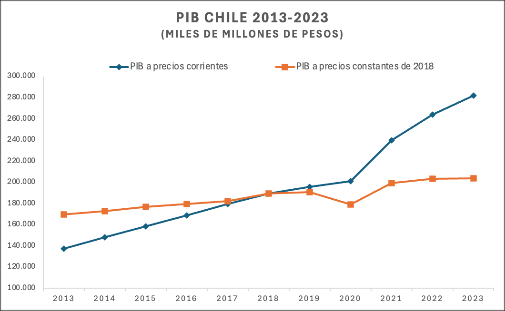
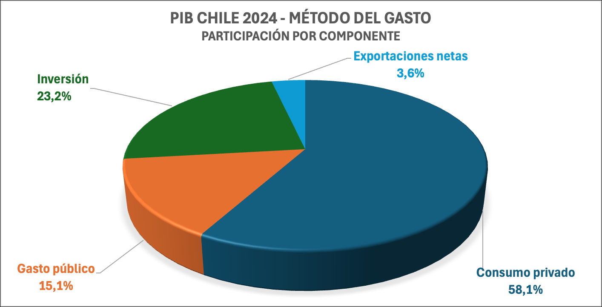

1. Definición y Componentes del PIB
Tal como se mencionó antes, el Producto Interno Bruto (PIB) es el valor monetario de los bienes y servicios finales producidos dentro de las fronteras de un país en un período. Se excluyen los bienes intermedios para evitar la doble contabilidad, y solo se registran los bienes de producción corriente (no se incluyen transacciones de bienes producidos en períodos anteriores).
1.1. El PIB Nominal vs. el PIB Real
- El PIB nominal (a precios corrientes) está influido por la producción y los precios en el año en curso.
- El PIB real (a precios constantes) busca medir la cantidad de bienes y servicios producidos, tomando como referencia un año base para eliminar el efecto de la variación de los precios.
En Chile, el Banco Central publica cifras de PIB nominal y PIB real (año base 2018).

1.2. El PIB como suma de gastos: (PIB = C + I + G + X - M)
Una forma frecuente de medir el PIB es a través del método del gasto, sumando las compras finales de bienes y servicios en la economía:
- Consumo (C): Gasto de los hogares en bienes y servicios.
- Inversión (I): Gasto de las empresas (o del propio hogar, en el caso de inversión residencial) en bienes de capital que aumenten la capacidad productiva futura: maquinaria, construcción de planta industrial, etc.
- Gasto público (G): Compras de bienes y servicios realizadas por el sector público (por ejemplo, infraestructura, servicios de salud y educación estatales), sin incluir transferencias como pensiones o subsidios, pues no corresponden a la compra de bienes/servicios finales.
- Exportaciones (X): Ventas de bienes y servicios a otros países.
- Importaciones (M): Bienes y servicios producidos en el extranjero que compran los residentes locales.
Al PIB se le suman las exportaciones (X) y se le restan las importaciones (M).
En notación simple: PIB = C + I + G + (X−M)
En la práctica, en un país orientado al comercio internacional, como Chile, X e M son componentes sustanciales, sobre todo en materias primas, manufacturas y servicios. componente (X-M) se denomina exportaciones netas. Si el país importa más de lo que exporta, esta parte se vuelve negativa, generando un déficit comercial.

1.3. El PIB como suma de valores agregados
Otra perspectiva es el método del valor agregado. Cada empresa agrega un valor a sus insumos antes de venderlos. La suma de los valores agregados en todas las etapas de producción de bienes y servicios debe coincidir con el valor de mercado final de dichos bienes y servicios.
- Por ejemplo, si una refinería compra barriles de petróleo crudo por 100 dólares cada uno y, tras refinarlos, vende gasolina por 120 dólares, el valor agregado por la refinería es de 20 dólares.
- De igual forma, la extracción del petróleo crudo agrega un valor específico antes de venderlo a la refinería, y así sucesivamente.
Este método ayuda a ver cómo se componen los distintos sectores de la economía (minería, industria, agricultura, servicios, etc.) en el PIB. Para Chile, el sector minero (especialmente el cobre) ha sido históricamente un aporte relevante al valor agregado total. Otros sectores (servicios financieros, comercio, transporte, manufactura, agropecuario) también contribuyen a la formación del PIB, y su peso relativo varía con el tiempo.
1.4. El PIB como suma de los ingresos (método del ingreso)
El flujo circular del ingreso indica que el valor de la producción vendida (PIB) se convierte, tras la venta, en ingreso de los factores que intervienen en la producción (trabajo y capital), además delos impuestos cobrados por el gobierno. Por tanto, se llega también a una estimación del PIB al sumar:
- Remuneración de los asalariados
- Excedente del Explotación (Ingresos del capital)
- Impuestos netos sobre la producción y los productos
En Chile, típicamente, alrededor de la mitad o más del ingreso doméstico corresponde a salarios, con variaciones históricas que se explican por el grado de capitalización de la economía y por las condiciones del mercado laboral.
2. Del PIB al Producto Nacional Bruto (PNB)
El Producto Nacional Bruto (PNB) mide el ingreso que reciben los residentes nacionales de un país, independientemente de si la producción se generó dentro o fuera de las fronteras. Por contraste, el PIB se enfoca únicamente en la producción generada en el territorio. La diferencia fundamental entre PIB y PNB surge cuando parte de la producción interna pertenece a extranjeros o parte de la producción externa (en otro país) pertenece a nacionales.
- Pago neto a factores (PNF): mide la diferencia entre los ingresos percibidos por nacionales en el exterior y los ingresos captados por extranjeros en el país.
- Si PNF es positivo, el PNB > PIB (más ingresos provienen del exterior que los que se pagan a foráneos).
- Si PNF es negativo, el PNB < PIB (más ingresos se pagan a extranjeros).
Chile, por ejemplo, tiene una industria minera (cobre) con participación importante de empresas extranjeras. Eso implica que parte de las utilidades generadas se transfiere fuera del país, reduciendo el PNB con respecto al PIB. En los años en que el precio del cobre alcanza niveles muy altos, ese diferencial tiende a hacerse más notorio, pues las remesas de utilidades de las mineras extranjeras crecen.
Algunos países presentan la situación inversa (por ejemplo, si invierten fuertemente en el exterior y reciben rentas sobre esas inversiones), de modo que su PNB puede ser mayor que el PIB.
| Producto Interno Bruto (PIB) | 209.929 |
|---|---|
| Ingreso de factores recibidos del resto del mundo | +8.059 |
| Ingreso de factores pagados al resto del mundo | -19.407 |
| Producto nacional bruto (PNB) | 198.450 |
Nota: cifras reales a Precios de 2018
Fuente: BCCh
3. El PIB como Indicador de Bienestar
El PIB per cápita (PIB dividido por la población) es a menudo un indicador de referencia para comparar el nivel de desarrollo entre países. Sin embargo, no debe interpretarse de forma simplista como una medida exacta de bienestar. Existen varios motivos:
- No recoge la producción de bienes y servicios no transados en el mercado, como las tareas domésticas o el trabajo informal que no se registra.
- No descuenta los efectos negativos como la contaminación o el agotamiento de recursos naturales.
- No mide la distribución del ingreso.
- No considera la calidad de bienes públicos como educación, salud y seguridad, que pueden incidir fuertemente en el bienestar.
En Chile, se ha debatido sobre la conveniencia de complementar el PIB con indicadores sociales y ambientales (Índice de Desarrollo Humano, coeficiente de Gini, etc.) para tener una visión más integral del bienestar.
Como un elemento para motivar la reflexión, conviene mirar la contrastación que en 2025 publicó la revista The Economist entre felicidad y PIB per cápita. El gráfico no se reproduce aquí porque es material de un tercero, y el sitio de la revista requiere suscripción. La comparación, sin embargo, puede rehacerse con sus dos fuentes declaradas, ambas de acceso abierto: los puntajes de satisfacción vital del World Happiness Report 2025 —con su panel de datos descargable— y el PIB per cápita del Banco Mundial.
Lo que se observa al cruzarlas es una relación positiva pero no determinante: la correlación es fuerte, y aun así hay países de ingreso muy alto que no aparecen entre los más satisfechos, y países de ingreso medio que sí. Esa dispersión es justamente el argumento de esta sección: el PIB per cápita ordena, pero no agota, la pregunta por el bienestar.
4. Variación Interanual del PIB Real (o “Crecimiento”): Concepto y Ejemplos con Datos de Chile
Una forma muy común de medir el desempeño macroeconómico de un país es analizar la variación interanual de su Producto Interno Bruto (PIB) real. Esta variación, también llamada “crecimiento del PIB”, compara el nivel de la producción de un período (por ejemplo, un año o un trimestre) con el mismo período del año anterior.
4.1. ¿Qué es la variación interanual del PIB real?
- PIB real: valor de la producción de bienes y servicios medido a precios de un año base, para aislar el efecto de la inflación.
- Variación interanual: mide el cambio porcentual del PIB real entre dos períodos equivalentes con un año de diferencia; por ejemplo, entre 2023 y 2024, o entre el primer trimestre de 2023 y el primer trimestre de 2024.
Fórmula general
Si PIBt representa el PIB real en el año (o trimestre) t, y PIBt−1 el del año (o trimestre) anterior, la tasa de crecimiento es:
Ejemplo con cifras de Chile.
| 2013 | 2014 | 2015 | 2016 | 2017 | 2018 | 2019 | 2020 | 2021 | 2022 | 2023 | 2024 | |
|---|---|---|---|---|---|---|---|---|---|---|---|---|
| PIB real | 169.864 | 172.909 | 176.630 | 179.726 | 182.166 | 189.435 | 190.637 | 178.925 | 199.170 | 203.461 | 204.521 | 209.929 |
- Si queremos calcular el crecimiento entre 2017 y 2018, aplicamos la fórmula:
- Si queremos calcular el crecimiento entre 2019 y 2020, aplicamos la fórmula:
4.2. Ventajas de medir la variación interanual
- Comparabilidad: al comparar un año con el mismo período del año anterior, se evitan problemas de estacionalidad.
- Seguimiento de tendencias: se observa si el país lleva una trayectoria de expansión o contracción a lo largo del tiempo.
- Base para análisis de política económica: gobiernos y bancos centrales necesitan esta tasa para evaluar si se requiere estimular la demanda, enfriar la economía o introducir reformas estructurales.
4.3. Aplicación Práctica en Chile
- Rangos de Crecimiento
- Entre 2013 y 2016, la economía chilena registró tasas de crecimiento moderadas (1,7% a 2,2% aprox.), con un leve repunte en 2018 (casi 4%).
- Destaca la contracción en 2020 (-6,14%), vinculada a la coyuntura global de ese año (Pandemia).
- Posteriormente, en 2021 se observa un rebote de 11,3%, reflejando la recuperación tras la caída anterior.
- Factores que influyen en las variaciones
- Shocks externos: volatilidad en precios de materias primas (p.ej., cobre), crisis internacionales, casos como la pandemia del COVID-19, etc.
- Política económica: uso de estímulos fiscales y monetarios, reformas estructurales.
- Dinámica interna: entender qué prima sobre el desempeño, entre variables como el consumo de los hogares, inversión privada, gasto público o exportaciones.
- Importancia para la política y el sector privado
- Estas tasas guían el análisis macroeconómico y la toma de decisiones de gobierno (fiscal y monetaria).
- Las empresas y los inversionistas observan la trayectoria del PIB para evaluar riesgos y oportunidades de negocios.
En suma, el cálculo interanual del PIB real permite cuantificar la evolución de la actividad productiva año tras año y entender los períodos de expansión y contracción en la economía de un país.